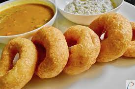

Sambar Vada

Description
Sambar Vada is a popular South Indian breakfast snack of donut shaped lentil fritters that are fluffy, crispy, soft and delicious. If sweet breakfast isn’t your thing, try this recipe for savory spiced donuts made with black gram lentils, spices and herbs. Traditionally paired with Sambar and Coconut Chutney, these make for a comforting, filling and satisfying breakfast or snack
Ingredients
For Vada
- 1 cup urad dal
- Salt to taste
- 5-6 tbsp water to grind dal
- 6-7 chopped curry leaves
- Oil for frying
For Sambar
- ¼ cup toor dal
- 2 medium size chopped onion
- 1 tsp ginger paste
- 2 chopped tomatoes
- ½ tsp turmeric powder
- 1 drumstick pieces
- 1 brinjal pieces
- 1.5 cup +1.5 cup water
- 2 tbsp tamarind paste
- Some coriander leaves and jaggery
Steps
For Vada
- Heat oil in a small skillet over medium heat, and add the mustard seed, cumin seed, and asafoetida powder. Once the mustard seeds start to sputter and the mixture is fragrant, remove from heat and stir into sambar. Serve hot.
- Wash Urad dal and Moong/Chana dal. Soak them in water for 4-5 hours or the entire night.
- Take out Dal from water and wash once them more. Grind wet Dal without adding water or just a little water. There should be very less water in it. Do not grind Dal into a very fine paste.
- Put in salt,ginger, green chilli and green Dhaniya(coriander) to the grounded Dal then blend these well. The more you beat Dal it gets more soft. The mixture required to prepare Sambhar Vada is ready
- You can give shape to this mixture using your hands or a plastic sheet. In southern India banana leaves are also used in place of plastic sheets
For Sambar
- Pour oil in a pan(kadhai) and heat, wet fingers in water. Place 1 or 1 2/2 tbsp of mixture on the wet fingers and using your thumb or the fingers of the other hand make a crater into a hole. Put this Vada in hot oil to fry, according to the oil in the pan make 3-4 Vadas and put them in one go. Turn over the Vada when its lower side turns brown. Fry till both sides turn brown then take it out. Similarly, take out all the Vadas. All of your Vadas are ready.
- Place yellow split peas in a saucepan with 2 cups water and bring to a boil. Reduce heat to medium-low, and cook until soft, about 15 minutes. In another saucepan, mix together the tamarind pulp stir in 1/2 cup water to make a watery juice. Bring to a boil over medium-high heat. Add the bell pepper and tomato to the tamarind juice, and continue to boil until the vegetables are soft, and the liquid has reduced to almost half.
- Meanwhile, grind the coriander seeds, yellow lentils, coconut and chilies to a paste using a mortar and pestle or food processor. Add this paste to the tamarind sauce, then stir in the yellow lentils until everything is well blended. Bring to a boil once again, then remove from the heat and set aside.
- Heat oil in a small skillet over medium heat, and add the mustard seed, cumin seed, and asafoetida powder. Once the mustard seeds start to sputter and the mixture is fragrant, remove from heat and stir into sambar. Serve hot.